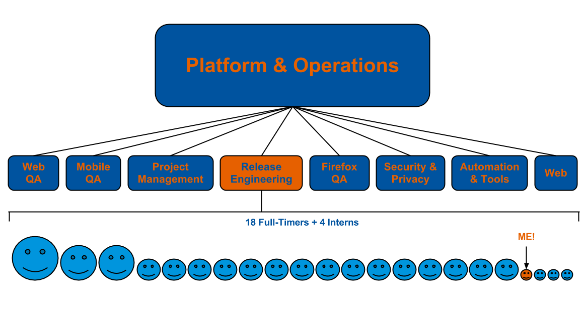

KEEP CALM AND SHIP IT
My summer in Mozilla Release Engineering
Created by John Zeller / IRC: zeller
What should you expect?
- First, a little about myself
- What is Release Engineering?
- Projects I contributed to
- Conclusion
- Questions
First
Who is John Zeller?
I'm a student

I like robots
I like space


I like being active


I like to be fancy
...enough about me...
What is Release Engineering?
Overview of Mozilla
Overview of Mozilla

Put Another Way
Release Engineering encompasses a part of the process between when a Developer makes a software check-in and when that change is ready to ship out to the user.
Release Engineers != Developers
Developers build a product
Release Engineers build a pipeline
So what does this Pipeline look like?

Building/Testing

Building/Testing

Building/Testing
Building/Testing
Riding the Trains

Riding the Trains

Riding the Trains

Riding the Trains

Riding the Trains
Riding the Trains

Riding the Trains
How is the pipeline run?
How is the pipeline run?
How is the pipeline run?
How is the pipeline run?
What's changed in the past 5 years?
Expansion
May 2007 | Today |
|---|---|
| Number of machines running builds/tests | |
| Time to ship a chemspill (emergency) release | |
| Time to ship a 'new feature' release | |
What's changed in the past 5 years?
Demand
May 2007 | Today |
|---|---|
| Number of branches | |
| Number of check-ins per day | |
| Number of locales (languages) that we ship for | |
Compute Time
| per Check-in | |
| per Month | |
| per Year |
For more information
Search on the Google Talks YouTube channel for the video titled
Release Engineering as a Force Multiplier
Projects I contributed to
- BuildAPI
- Autolander
- Nagios Alerts
- Reporting
BuildAPI
BuildAPI
BuildAPI
BuildAPI
Gaia-Central Reporting Bug
5/21 to 5/28
BuildAPI
Gaia-Central Reporting Bug
5/29 to 6/5
BuildAPI
Push Report Adjustments
Autolander
Autolander
Autolander
Autolander
Autolander
Autolander

Autolander
Autolander
Autolander
Autolander

Autolander
Autolander
Autolander
Note: Autolander is still in development and is not available for use yet.
Nagios Alerts
Nagios Alerts
Nagios Alerts
Nagios Alerts
Nagios Alerts
Nagios Alerts
Reporting
Reporting
In Conclusion...
Release Engineering is a
Force Multiplier
A Force Multiplier is:
A capability that, when added to and employed by a team, significantly increases the potential of that team and thus enhances the probability of successDefense Technical Information Center (dtic.mil)
Special Thanks
- Hal Wine (hwine)
- John O'Duinn (joduinn)
- Jill Alvarez
- Andrea Zingerman
- All of RelEng
- Aki Sasaki (aki)
- Armen Zambrano Gasparnian (armenzg)
- Ben Hearsum (bhearsum)
- Justin Wood (Callek)
- Chris Atlee (catlee)
- Chris Cooper (coop)
- Joey Armstrong (joey)
- John Hopkins (jhopkins)
- Jordan Lund (jlund)
- Kim Moir (kmoir)
- Massimo Gervasini (mgerva)
- Michael Shal (mshal)
- Nick Thomas (nthomas)
- Pete Moore (pmoore)
- Rail Aliiev (rail)
- Simone Bruno (simone)
For more information
Search on the Google Talks YouTube channel for the video titled
Release Engineering as a Force Multiplier